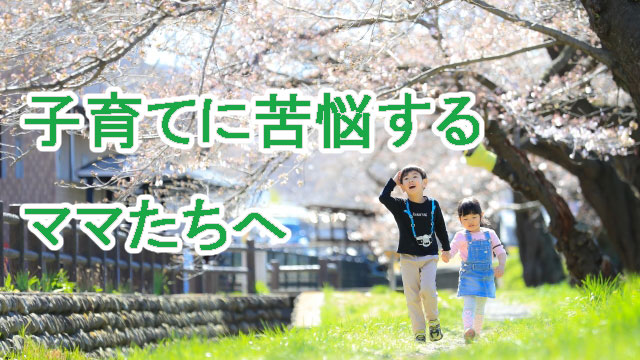

子育てに疲弊している母親が多いなと感じる。
たしかに子どもを育てるのは大変であり、我が子を一人前に育て上げる過程は企業における一大プロジェクトのような苦労の連続だろう。いやそれ以上かも知れない。
会社のプロジェクトと違って子育てに終わりもなければ正解もない。仕事なら一定期間で必ず終了があり、成功か失敗かの結果もすぐにわかる。だが子育てはいつ果てるとも知れぬ迷いの連続であり、良い子育ての方法と言うのも分からず、もし結果がわかるとしてもそれは何十年も先の話でそのとき「失敗した！」と思ってももう遅い。
だからこそ多くの親は何らかの「正解」を求めてしまうのだろう。
「失敗は取り返しがつかない。
子どもがダメな人間になったらそれは自分たちのせい。」
「将来ちゃんとした人間になり立派な社会人になるには今から気を付けておかないと。」
「しっかり勉強させてソコソコ良い学校に入れておかないと。」
そんなふうに未来への責任や義務ばかり先走って苦悩しているうちに、子どもはあっという間に大人になってしまう。
そうして多くの親は気づく。
「何だ案ずることはなかったんだ。」
「こんなことならもっと安心して育ててればよかったのに…」
そのときの感想はもっと子育てを楽しめばよかった…に尽きる。
それなのに将来の心配ばかりして「いまという大切な時」を十分味わうことができなかったと気づく。
先日古いアルバムを整理していると妻が子どもたちの幼稚園時代の写真を見つけて嘆息した。
「ああ、かわいい！あの子たちこんな可愛かったのね」
そこには可愛い盛りの子どもたちとの時間をもっと楽しめばよかった…という後悔の念がにじんでいた。その頃はワンパク坊主たちを追い回し、後始末に振り回され楽しむ余裕などなかった。
子どもの問題に振り回され、子育てに疲弊しているときが実はもっとも充実している瞬間だったと後で気づく人は多い。
人生も子育ても同じ。
私たちは過去を悔んだり未来を心配することに忙しく「今この瞬間」の宝物を見過ごしてしまう。
子育てに格闘する今この時こそが子をもつ親としてのダイゴ味であることになかなか気づけない。
人生に色々な問題を抱えて苦悩していた時がもっとも実り多い時期だったと後で気づくようなもの。
子育てに終わりが見えない気がするのも今のうちだけ。あまり正解を求めて右往左往しないこと。育て方を間違えているのでは…などと自分を責めないこと。
「私の子なんだから結局は大丈夫」と大きな気持ちで子どもを信じてあげること。そうして毎日「子どもといられる今この時」を大切に過ごす。
さらに親自身が日々充実して生きること。
これだけで当面親の努めは十分だと思う。
子育てOBのひとりとして現役ママたちに贈りたい最後の言葉は、
「子どもと過ごす今という貴重な時間をどうか楽しんでください」ですね。
◇◇◇◇◇◇◇◇◇◇◇◇◇◇◇◇◇◇◇◇◇◇◇◇◇◇◇◇
長老カフェぶっちゃけ教育トーク第５回（前編）を公開しました！
「伸びる親は子供の心配をしない！？
長老カフェ第5回『伸びる親の特徴』〜中編〜」
是非ご視聴ください。